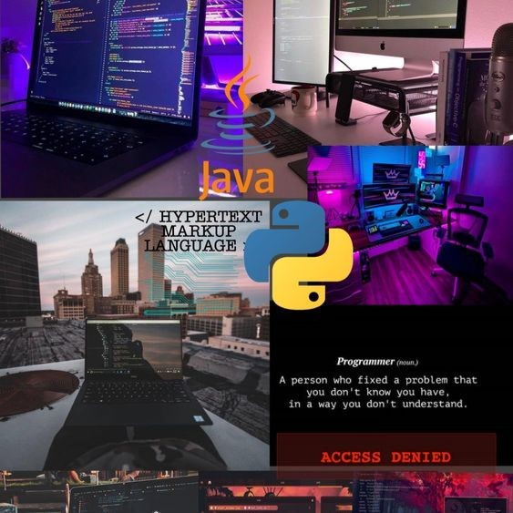
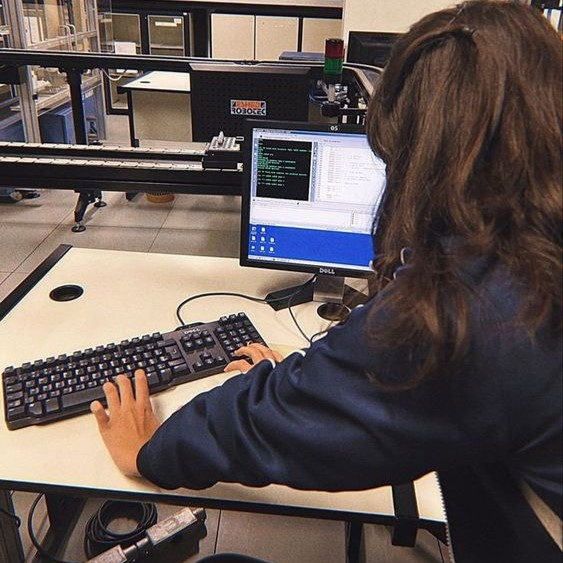
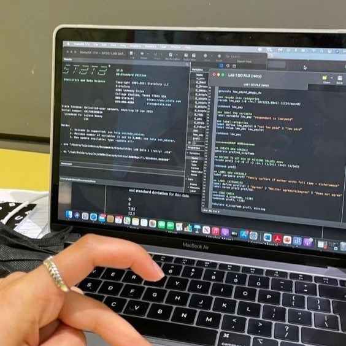

La Ingeniería de Software es una disciplina en constante evolución que juega un papel fundamental en la
creación y el mantenimiento de sistemas de software complejos y robustos. En los últimos años, ha habido una
creciente demanda de profesionales en el campo de la ingeniería de software, y esta tendencia parece
continuar en el futuro cercano.

Como entusiasta del diseño de interfaces y apasionado por aprender nuevas tecnologías, tengo grandes
aspiraciones para mi futuro en el campo de la ingeniería de software. Me fascina la idea de crear
experiencias digitales innovadoras y atractivas que impacten positivamente a los usuarios.
Visualizo mi trayectoria profesional como un viaje de descubrimiento constante, donde cada nueva tecnología
y concepto de diseño que aprendo se convierte en una herramienta poderosa para materializar mis ideas
creativas. Además, tengo un profundo interés en utilizar mis habilidades para contribuir a proyectos de software que tengan un impacto significativo en la comunidad o en la sociedad en general. Me gustaría formar parte de
equipos que desarrollen soluciones tecnológicas para la comunidad, como aplicaciones móviles para el
aprendizaje, herramientas digitales para mejorar la accesibilidad a las personas. En pocas palabras deseo
convertirme en una profesional exitosa y atribuit a la comunidad desde el enfoque de mi rama, donde pueda
explotar mis ideas🪄.

Dentro de las distintas ramas de la carrera de la Ingeniería de Software, me gustaria dedicarme al
desarrollo de aplicaciones y páginas web, debido a mi capacidad para diseñar, desarrollar y mantener
aplicaciones y sitios web funcionales y atractivos, estos son mis intereses en estos momentos noc que pasara
despues pero por ahora es algo que me gustaria.
